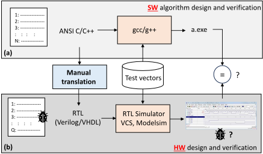
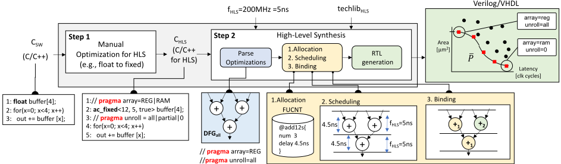
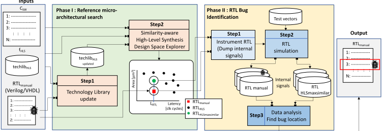
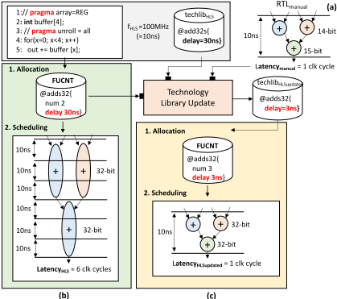
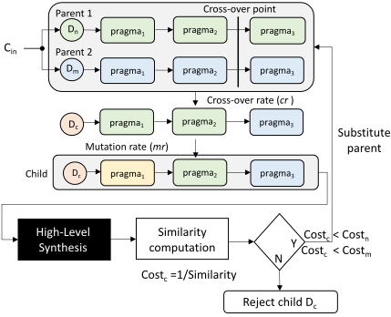

在RTL描述中查找Bug：借助High-Level Synthesis（HLS）
论文解决手工将C/C++行为级描述转写为优化RTL时引入的功能bug难以定位的问题：传统上依赖慢速RTL仿真产生的大波形人工排查，而C2RTL形式等价检查工具复杂昂贵且对语言子集和RTL形式限制严格。方法分两阶段：Phase I解析手工RTL提取FU类型与位宽并回标延迟更新HLS技术库，使HLS能复现手工设计的调度结构；再用遗传算法做相似度感知的HLS DSE，以从容错领域DIMP指标扩展出的Similarity Index（SI）为代价函数，自动找到与手工RTL架构最相似的参考设计。Phase II对两个RTL插桩并仿真，在高SI（0.85–1）路径上比对内部信号值定位bug。在7个OpenCores/MiBench/CHStone基准上平均SI=0.90，平均检出93.5%的注入bug（operation inversion 98%、FU bitwidth 95%、stuck-at 86%），SI与检出率相关性0.74–0.90，相似度感知DSE平均耗时3h57min。
HW设计师通常先有SW工程师编写的C/C++行为级描述，再手工做并行化、float转fixed-point、流水线等优化得到高效RTL，该过程耗时且易错；引入的bug传统上靠慢速RTL仿真器（VCS/Modelsim）产生的大波形人工排查，效率低下；形式验证方法复杂昂贵且并非人人会用。论文目标是自动、准确地指出bug在手工RTL代码中的位置，而非用HLS生成最终硬件。
提出两阶段全自动流程。Phase I（参考微架构搜索）：Step 1解析RTLmanual提取其中FU的类型与位宽，将提取的延迟回标到HLS技术库（如把32-bit adder延迟从30ns改为3ns），使HLS在保持原始SW数值精度的同时生成与手工设计相同调度结构的电路；Step 2用遗传算法（cross-over rate约90%、mutation rate约20%、迭代10次）做相似度感知HLS DSE，代价函数C=1/SI，其中SI是将容错领域DIMP路径多样性度量扩展到RTL DFG上计算的相似度（1为完全相同、0为无共同路径），找到与RTLmanual最相似的RTLHLSmaxsimilar。Phase II（bug定位）：对两个RTL插桩dump全部内部信号，用与验证CSW相同的测试向量仿真，提取SI在0.85到1之间的输入到输出路径，沿这些路径比对信号值定位bug。考虑的故障类型：数据类型转换（float转fixed-point、大位宽转小位宽）、逻辑/算术运算取反、常量/变量交换。
7个基准（OpenCores RTL + MiBench/CHStone C源码）上平均SI=0.90（1为完全相同设计）
平均检出93.5%的注入bug；其中operation inversion平均98%、FU bitwidth 95%、stuck-at-fault最低86%（每类故障随机注入100次）
SI与bug检出率高度相关：三类fault的相关性分别为0.74、0.78、0.90
最耗时步骤为相似度感知HLS DSE，7个基准平均3h57min；其次为两个RTL的仿真，其余步骤耗时很少
实验环境：NEC CyberWorkbench v.6.1（HLS）、Synopsys VCS 2018.06、Nangate 45nm开源工艺库、目标频率200MHz、10,000个均匀随机测试向量
作者声称这是首个利用无时间（untimed）行为级描述来定位手工生成RTL中bug的工作。区别于C2RTL形式等价检查器（Cadence Jasper C2RTL App、Siemens EDA SLEC），该方法基于仿真、不要求特定可综合C++/SystemC子集、对RTL是否流水线等形式无严格限制；区别于常规HLS DSE追求Pareto最优设计，其以与手工RTL的架构相似度最大化为目标，并通过回标FU延迟修改HLS技术库这一手段使HLS能匹配手工位宽优化后的调度结构；还将容错领域的DIMP多样性度量首次扩展为RTL间的相似度度量（SI）。
相关度级别：high
命中能力域：2.4 设计验证方法学 | 2.2 RTL 设计与实现 | 2.7 EDA/验证自动化与 AI 辅助
理由：论文核心是全自动RTL bug定位流程（golden参考生成→插桩→内部信号diff→根因报告），直接命中2.4中'bug triage与debug方法学'这一核心技术，对应团队验证交付中回归失败triage与人工看波形的痛点；其故障模型（float转fixed-point、FU位宽缩减、运算符写反）正是2.2手工RTL实现中典型的数据通路设计错误；流程本身（技术库回标、GA-DSE、自动插桩比对）属于2.7验证/EDA自动化。但需注意适用前提：方法要求存在可综合C/C++源头且RTL由其手工推导，更契合数据通路/加速器类设计；团队的LPDDR/HBM4/UCIe等协议型IP多为控制密集逻辑、RTL通常从协议spec手写而非从C算法转写，论文自己也指出HLS对控制密集应用质量尤其差，因此整体流程难以直接套用到协议IP，主要价值在于借鉴'参考模型+高相似路径内部信号比对定位根因'的debug思路与SI相似度度量。
建议动作：深入精读并做内部分享
{baharealsadat.parchamdar,schaferb}@utdallas.edu
德克萨斯大学达拉斯分校电气与计算机工程系

大多数寄存器传输级（Register Transfer Level, RTL）设计源自用 C 或 C++ 编写的行为级描述，这些描述通常由软件（Software, SW）设计人员编写。随后，硬件（Hardware, HW）设计人员使用 Verilog 或 VHDL 等硬件描述语言（Hardware Description Language, HDL）手动描述该应用的高效硬件实现。尽管已有研究表明，高层次综合（High-Level Synthesis, HLS）提供了将这些行为级描述直接综合为 RTL 的途径，但所生成 RTL 的质量往往仍不可接受，因此仍需手动设计硬件。然而，这一过程耗时且容易出错。尤其是，查找手动设计中引入的错误（bug）非常繁琐，因为硬件设计人员依赖于长时间的仿真，而仿真会产生大量波形，必须对其进行彻底审查。
为解决这一问题，本文提出一种自动化方法，利用 HLS 准确指出错误在 RTL 描述中的具体位置。具体而言，我们利用 HLS 能够生成多种不同微架构的能力，自动找到一个在架构上与手动优化后的设计“相似”的设计，以帮助定位错误。这还涉及自动更新 HLS 技术库，以匹配浮点功能单元（Functional Units, FUs）的延迟，使其与手动优化的 RTL 设计中所使用的等效整数功能单元相匹配；这是因为在手动转换过程中，可能导致数值稳定性问题的主要优化之一便是浮点数据到定点数据的转换。
RTL 故障，高层次综合，设计空间探索，相似度估计。
B. Parchamdar 和 B. Carrion Schaefer。2024年。在RTL描述中查找缺陷：高层次综合来救场。载于第61届ACM/IEEE设计自动化会议（DAC '24），2024年6月23日至27日，美国加利福尼亚州旧金山。ACM，美国纽约州纽约市，共6页。https://doi.org/10.1145/3649329.3658258
高层次综合（HLS）将不含时序信息的行为级描述（例如 ANSI C 或 C++）转换为高效的硬件（HW）电路
DAC '24，2024年6月23日至27日，美国加利福尼亚州旧金山。本作品根据知识共享署名 4.0 国际许可协议进行许可。
©2024 版权归所有者/作者所有。
ACM ISBN 979-8-4007-0601-1/24/06
https://doi.org/10.1145/3649329.3658258
并以 Verilog 或 VHDL 描述。已有研究表明，将超大规模集成电路（VLSI）设计的抽象层次从寄存器传输级（RTL）提升到行为级具有诸多优势，例如缩短周转时间、支持更快速的仿真，以及只需设置不同的综合选项即可从同一行为级描述生成不同类型的硬件电路 [1]。
然而，HLS 的主要问题之一在于，所生成电路的质量往往不如使用 Verilog 或 VHDL 等传统硬件描述语言（HDL）手工优化的 RTL 代码 [1, 2]。对于控制密集型应用而言尤其如此。因此，许多 VLSI 设计公司在开展集成电路（IC）设计时，会首先开发应用的算法描述（例如图像处理、数字信号处理或加密算法），然后手工实现一种能够高效执行该应用的硬件架构。对于如今大多数 IC 出于能效原因而包含的 HW 加速器而言，情况尤其如此。
图 1 展示了这一流程的概览。算法设计与验证首先在软件（SW）中完成，随后 HW 设计师通常会通过并行化 SW 描述并执行多种优化（如浮点到定点数据转换和流水线化）来手工创建一个优化的架构，以满足期望的面积、性能和功耗约束。
这种方法的主要问题在于耗时且容易出错。如图所示，SW 可以使用 gcc 或 g++ 等标准编译器快速编译，编译后的程序也能快速完成仿真。而 HW 设计师则使用速度缓慢的 RTL 仿真器（例如 VCS 或 Modelsim），并依赖庞大的波形来查找缺陷。由于 HDL 比 SW 描述冗长得多，这些波形极其庞大。
其他被提出的方法还包括使用形式化验证技术 [3]。然而，这些技术使用起来仍然复杂且成本高昂，因此并非每个人都接受过如何有效使用这些技术的充分培训，也并非人人都能获得这些工具。
基于此，本工作的主要目标是帮助硬件（HW）设计人员发现手工编写的寄存器传输级（RTL）代码中的缺陷，具体做法是使用原始的行为级软件（SW）描述，并将其通过高层次综合（HLS）进行综合，以获得一个能够生成黄金参考输出的周期精确RTL描述。随后，这一新描述被用于查找手工编写的RTL代码中的缺陷。我们的目标并非使用HLS来构建最终硬件，而是开辟一条查找手工生成的RTL代码中缺陷的途径。总而言之，本工作的主要贡献如下：
最先进的超大规模集成电路（VLSI）系统的复杂性使得验证过程变得极具挑战性，并成为设计周期中最重要的瓶颈之一。大多数HW设计人员仍然依赖通过全面的RTL仿真来获得测试覆盖率 [4, 5]。一些工作甚至假设缺陷无法在流片前阶段被完全消除，因而提出了在线设计缺陷检测机制 [6, 7]。
该领域的另一个方向提出使用形式化验证技术 [8]。这些技术包括属性检查和等价性检查器，由于相关属性是通过数学方法证明的，因此无需任何仿真。尽管这些形式化验证技术主要应用于寄存器传输级，但一些电子设计自动化（EDA）厂商已经开发出C/C++到RTL的等价性检查器，例如Cadence Jasper C2RTL App和Siemens EDA SLEC。这些检查器的主要问题在于，它们只能处理特定的输入语言子集（例如可综合的C++和SystemC），并且对所支持的RTL描述存在严重限制（例如流水线与非流水线）。
据我们所知，这是首个旨在利用非定时行为级描述来查找手工生成的RTL代码中缺陷的工作。
本节介绍为更好地理解所提出的方法所需的重要背景信息。具体而言，本节将介绍高层次综合（HLS）的基础知识，因为本工作的目标是找到一种与手工生成的RTL代码功能等价且底层结构相似的架构，并定义我们在本工作中所考虑的主要功能故障（缺陷）。
高层次综合：图2展示了使用HLS来综合行为级描述的典型流程。如图所示，该流程由两个步骤组成。
步骤1由人工完成，涉及在C/C++不可综合的情况下使其变得可综合。大多数HLS工具不支持递归和动态内存分配。因此，原始的软件（SW）描述可能需要修改才能使其可综合。其他典型的优化是数据类型精化。SW开发人员通常将需要实数的变量声明为float。然而，float在硬件（HW）中实现的代价非常高。因此，HW设计人员通常必须将这些float转换为定点数据类型。如图中的代码片段所示，CSW中的原始数组（buffer[4]）最初被声明为float，现在使用任意精度数据类型（ac_fixed）[9]将其声明为12位有符号定点数据类型。这种人工数据类型精化是将纯SW描述转换为针对HLS优化的行为级描述时的主要错误来源之一，并且需要进行大量的数值精度分析。
步骤2随后执行实际的HLS。如图所示，HLS过程包含多个遍（pass）。第一个遍是解析行为级描述并执行与工艺无关的优化。解析器主要检查
This DFG is then converted into RTL through HLS's main steps: (1) Allocation, (2) Scheduling, and (3) Binding. Allocation extracts from the technology library ( techlib HLS ) the basic operators required to synthesize the DFG and generates a Functional Unit Constraint File (FUCNT). In this example, the FUCNT includes three 12-bit signed adders (add12s). As shown in the figure, these adders have a delay of 4.5 ns. The scheduling step then assigns different portions of the DFG to individual clock steps based on the target synthesis frequency ( fHLS ), in this example set to 200 MHz=5 ns, the number of functional units (FUs) specified in the FUCNT file and the delay of these FUs. In this particular case because the delay of the adder is 4.5 ns and the target HLS synthesis frequency is 5 ns, only two adders can be scheduled in a single clock step. Hence only two adders are being used as one of the two adders is re-used in the next clock cycle. Finally, the binding stage decides which additions are mapped to which adders in the FUCNT.
The back-end of the HLS process takes these results and outputs the synthesizable RTL. As shown in Fig. 2, setting different pragma combinations leads to HW implementations of different area vs. performance trade-offs. Because area and performance are conflicting design metrics there is no single HW implementation that dominates all of the others. Instead, out of all the pragma combinations there are some that lead to Pareto-optimal designs that form the Pareto frontier ( ¯ P ). The process of finding these Pareto-optimal designs can be automated and is typically referred to as HLS design space exploration (DSE) [10]. In this particular work, our goal is not to find the Pareto-optimal designs, but to find the HW implementation that resembles the most the manually optimized RTL design such that we can exactly pin-point the location of the fault in it.


Faults (Bugs) Definitions: Multiple RTL faults have been presented in literature [11]. In this work we address the main faults introduced when manually converting a SW description into RTL that lead incorrect outputs [12]. These include: (1) Data type conversions from e.g., float to fixed-point and from larger integer bit widths to smaller precisions. (2) Logic/arithmetic operations inversions, and finally (3) Constant/variable switch.
For our flow to work we make the following assumptions that we believe are reasonable and that do not affect the generality of our approach. Assumption 1: The initial SW description ( CSW ) produces correct results which are used as golden outputs to test the HW. Assumption 2: The SW description ( CSW ) is synthesizable. It can still have floating point variables, but the description should be synthesizable with HLS. Assumption 3: We know the target operating frequency of the final HW and have access to the technology library.
图3展示了所提出的完整流程的概览。该流程的输入包括：含有错误的手工编写的寄存器传输级（RTL）代码（ RTLmanual ）（其仿真输出与黄金输出不匹配）、由软件设计师生成的、RTLmanual由之派生的C代码（ CSW ），以及与目标硬件的逻辑综合工艺库和工作频率相匹配的高层次综合（HLS）工艺库（ techlib HLS ）和目标综合频率（ fHLS ）。
所提出的流程由两个主要阶段组成。阶段I负责通过执行相似性感知的HLS设计空间探索（DSE），自动寻找一个与手工生成的微架构（ RTLmanual ）尽可能相似的微架构。随后，阶段II利用这个新生成的RTL代码，通过比较内部信号的仿真结果来查找RTLmanual中的一个或多个错误。接下来的小节将详细描述这些阶段。
第一阶段旨在自动寻找一个硬件设计（ RTLHLSmaxsimilar ），使其尽可能接近手工创建的硬件（ RTLmanual ）（该硬件将在步骤2中介绍）。为此，我们利用了HLS的主要优势之一：如背景信息部分所示，HLS能够通过设置不同的综合选项，从同一行为描述生成不同的微架构。
尽管由HLS生成的硬件设计预计不会像手工生成的设计那样得到优化，但我们的思路是找到一个相似的架构，以帮助查找 RTLmanual 中的错误。该阶段进一步细分为以下两个步骤。
步骤1：工艺库更新：如上一节所述并在图2中所示，HLS需要功能单元（FU）的延迟信息，以便准确地调度各操作，从而生成优化的硬件电路。当试图综合一个未针对HLS进行优化的软件描述时（如本例中的 CSW ），这一信息尤为关键，因为大多数变量可能被声明为浮点类型。这一点十分重要，因为浮点FU的延迟远大于整数FU，而且数据类型精化是传统的错误来源之一，因此必须将其纳入我们的流程中。

如果直接使用浮点数或大整数对 CSW 进行综合（HLS），那么所得到的硬件电路可能永远无法足够接近 RTLmanual ，因此，我们的流程可能无法精确定位任何错误的位置。
因此，我们的流程必须考虑 RTLmanual 中的量化数据类型。图4展示了一个说明其重要性的示例。该图展示了前面使用过的同一段代码片段，只是在此情况下变量被声明为'int'。这意味着在HLS中所需的加法器必须是32位有符号加法器。如果 fHLS 被设置为100MHz（10ns），而32位加法器的延迟为30ns，那么HLS通常会执行多周期操作（基本上允许该加法在3个时钟周期内完成）。如图4(b)所示，这导致了一个 latency=6 个时钟步的设计。相比之下，手工生成的RTL代码（ RTLmanual ）将加法器的位宽优化为14位和15位加法器，使其能够如图4(a)所示那样级联在一起。这产生了一个 latency=1 个时钟周期的电路。
该示例表明，无论我们设置何种pragma，由HLS生成的硬件电路都永远无法复现手工生成的设计（ RTLmanual ）。
为了解决这一问题，在此第一步中，我们的方法会解析 RTLmanual 并提取其中所有FU的类型和位宽。随后，通过反向标注从 RTLmanual 中提取的FU延迟，更新HLS工艺库（ techlib HLS ）中的FU，而该工艺库正是HLS过程在综合 CSW 时所需要的。
As shown in Fig. 4(c) the allocation stage of the HLS process is called first. This generates a FUCNT file that includes the number and delay of the FUs required. In this example it needs 32-bit signed adders. Our flow identifies that RTLHW uses 14-bit adders that have a 3ns delay and hence, generates a new HLS technology library ( techlib HLSupdate ) where the add32s adder now has a delay of 3ns instead of 30ns as in the original technology library. This enables the HLS process to generate the exact same schedule as in RTLmanual , but using 32-bit signed adders as shown in Fig. 4(c). Thus, the resultant HW still has the same numeric precision as the original SW description, while the circuit generated has the exact same structure to the manually generated one.
The obvious problem with this approach is that the generated RTL code from HLS will not meet the target synthesis frequency. This is not important as we only want to generate a functional correct circuit that is cycle-accurate for verification purpose (basically, performing logic synthesis on this RTL code will lead to timing errors).

Step 2: Similarity-aware HLS Design Space Explorer: Once the new technology library is generated, our flow continues by automatically finding the HW micro-architecture that is the closest to RTLmanual . For this we make use of a genetic algorithm as shown in Fig. 5. The explorer basically starts by generating two unique designs (parents) with two random settings of synthesis directives (pragmas) leading to Dn = { pragmal , pragmam , . . . , pragman } and Dm = { pragmax , pragmay , . . . , pragmaz } . The genetic algorithm then chooses a random cross-over point based on a specific cross-over rate ( cr ) and mixes the pragmas as shown in the figure to generate a new child design ( Dc ). Then individual pragmas are mutated based on a given mutation rate (mr). The cr is typically a large value (90%) and the mutation rate low (20%). The explorer then synthesizes this new child and computes its cost. In normal HLS DSE the cost function is formulated as a weighted sum of the Area (A) and Latency (L) of the circuit like C = α · A β · L . Modifying the weights ( α and β ) sets more weight on either minimizing the area or the latency, and hence, allows to completely sweep the search space in order to find the Pareto-optimal designs.
In our case, we are not interested in finding the Pareto-optimal designs, but a design with the highest architectural similarity to RTLmanual . Thus, we formulate the cost function as C = 1 SI , where SI is the Similarity Index between RTLmanual and the RTL generated from HLS ( RTLHLS ). The goal of the automated explorer is to find a new design that minimizes the cost function, hence, maximizes the SI . Another option to speed up the search would be to build a predictive model similar to [13], although this comes with inaccuracies.
阶段II：RTL错误识别：该第二阶段以阶段I的结果（ RTLHLSmaxsimilar ）作为输入，并确定RTLmanual中错误所在的位置。为实现这一目标，该阶段进一步划分为以下三个步骤：
步骤1：RTL插桩：该第一步以两个RTL描述（ RTLHLSmaxsimilar 和 RTLmanual ）作为输入，并通过将每个内部信号转储到单独的数据库中来对这些描述进行插桩。这将使我们的方法能够研究两个设计之间的差异。
步骤2：RTL仿真：该步骤使用给定的测试向量对两个插桩后的RTL描述进行仿真。这些测试向量与CSW验证中所使用的测试向量相同。仿真的结果是一个数据库，其中包含两个设计中每个主输入输出（primary IO）以及内部信号的仿真结果。
步骤3：数据分析与错误定位：该最后一步通过比较两次RTL仿真的结果来分析所生成的数据库。为了比较结果，我们再次复用阶段I步骤2中执行的相似性处理，并提取从主输入到主输出、具有高SI值（0.85至1）的所有路径。随后，利用这些路径上的信号值来验证错误所在的位置。
In order to test our proposed flow, we took 7 benchmarks that were available in RTL and C open-source repositories. In particular, we took 7 RTL benchmarks from OpenCores [16] to act as our manually converted RTL code ( RTLmanual ), and the equivalent same 7 benchmarks from C open-source repositories representing CSW . In particular, MiBench [17] and CHStone [18]. We made sure that a common set of test vectors lead to the exact same results in both cases as the implementation of some of the benchmarks were slightly different and hence, we had to manually modify the benchmarks. We then inserted a set of typical mistakes into the RTLmanual benchmarks randomly like reducing the bitwidth of a functional unit (FU) ( FU bitwidth ), and also randomly modifying an RTL operation for another one ( Operation Inversion ). E.g., modify an addition by a subtraction, or an XOR by an OR operation. Finally, we also set random stuck-at-faults of individual bits ( Stuck-at-fault ). Each of these faults was inserted randomly 100 times and we count the number of faults detected.
We use NEC CyberWorkbench v.6.1 as HLS tool, Synopsys VCS 2018.06 as RTL simulator. Nangate 45nm Open source is used as technology library and a target synthesis frequency of 200MHz in all cases. The verification is performed by simulating 10,000 uniformly random test vectors. The experiments were run on a server running CentOS v.8 on an Intel Xeon E5-2603 CPU @ 1.6GHz with 32 Gbytes of RAM.
Table 1 summarizes the results including the benchmarks names and their complexity in terms of lines of code. From the results we can make the following observations:
Observation 1: Our proposed flow is able to find for all of the benchmarks a similar architecture from the behavioral description to RTLmanual , denoted by the high similarity index (SI) obtained. On average the SI=0.90 (1 being the exact same design). This is particularly important here because the behavioral benchmarks and RTLmanual were actually obtained from two different sources. In a more realistic scenario, where RTLmanual is obtained from CSW we would expect an even higher SI.
| Bench | C SW #lines code | RTL manual #lines code | Similarity Index (SI) | FU bitwidth Faults found | Operation Inversion Faults found | Stuck-at-fault Faults found |
|---|---|---|---|---|---|---|
| sobel | 32 | 194 | 0.98 | 100/100 | 100/100 | 100/100 |
| fir | 58 | 203 | 0.98 | 100/100 | 100/100 | 100/100 |
| decim | 75 | 285 | 0.95 | 100/100 | 100/100 | 93/100 |
| dither | 77 | 301 | 0.94 | 91/100 | 100/100 | 85/100 |
| divider | 98 | 305 | 0.75 | 83/100 | 95/100 | 79/100 |
| aes | 134 | 745 | 0.85 | 100/100 | 97/100 | 85/100 |
| jpeg | 234 | 815 | 0.87 | 89/100 | 93/100 | 86/100 |
| Avg. | 0.9 | 95/100 | 98/100 | 90/100 |
| Bench | C SW #lines code | RTL manual #lines code | Similarity Index (SI) | FU bitwidth Faults found | Operation Inversion Faults found | Stuck-at-fault Faults found |
Observation 2: On average we can find 93.5% of all the bugs in the RTL code (averaging the bugs found in all of the four categories). The lowest rate happens in the stuck-at-fault faults (86%) as these are single bit faults that cannot be detected if they are in one of the non-overlapping paths. The easiest faults to find are the operation inversion with an average of 98% of faults found followed by FU bitwidths with 95%.
Observation 3: The Similarity Index (SI) obtained is highly correlated with the faults found. A correlation of 0.74, 0.78 and 0.90 is obtained between the SI and the different fault categories. This makes sense as a low SI means that the two HW architectures are too dissimilar and prevents our method from finding the faults.
表2按阶段及各阶段内的步骤归纳了所提出流程的平均运行时间。为考虑基准测试规模差异，采用了几何平均值。如表所示，最耗时的部分是相似性感知的HLS设计空间探索（DSE）步骤，因为该步骤需要生成多个设计并对其进行完整的综合（HLS），以评估它们与RTLmanual的相似性。平均而言，该探索过程对所有基准测试共耗时3小时57分钟。第二耗时的步骤是对RTLmanual和RTLHLSmaxsimilarity的RTL仿真。其余步骤的运行时间微不足道。
| Proposed Flow | Proposed Flow | Runtime [h:m] |
|---|---|---|
| Phase I Step 1: Techlib update | 0h:01min | |
| Step 2: Similarity-aware HLS DSE | 3h:57min | |
| Phase II | Step 1: Instrument RTL | 0h:01min |
| Phase II | Step 2: RTL simulation | 0h:09min |
| Phase II | Step 3: Data Analysis find bug | 0h:03min |
| Proposed Flow | Proposed Flow | Runtime [h:m] |
基于这些结果，我们认为，当存在可综合的行为级描述时，所提出的全自动流程在查找人工优化RTL代码中的错误方面是非常高效的。
在这项工作中，我们提出了一种自动化流程，用于帮助那些将无时序行为级描述手动转换为优化RTL描述的硬件（HW）设计人员查找错误。其中使用了两个关键思想。第一个是对HLS技术库进行修改，使HLS能够使用更高精度的功能单元（整数或浮点）生成相似的HW电路。第二个是利用过去在容错背景下提出的多样性度量来计算两个RTL的相似性指数。这两个关键思想被应用于一个自动化的基于遗传算法的HLS设计空间探索器中，以自动找到与人工优化所得架构相似的HW架构，进而实现错误的查找。